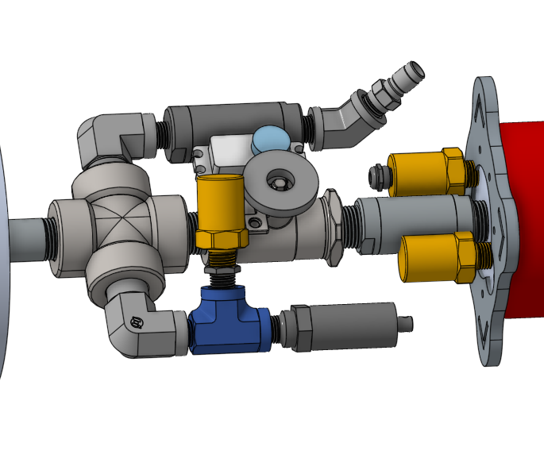

Fig 1.1: Multi-phase flow simulation & CAD model
Kadmos Loop — Small Modular Reactor Two-Phase Flow Separator & 33ft Test Loop
NuclearTwo-Phase FlowPatentLabVIEW DAQFluid Dynamics
Designed and patented a high-efficiency steam-water two-phase separator for a small modular nuclear reactor (SMR). Self-taught fundamentals of two-phase flow, Buckingham Pi scaling analysis, and interfacial mechanics to direct a 6-person university research team through 6 prototype iterations and 3 delivery systems. Set system requirements, supervised Schedule 80 CPVC construction, and programmed the NI LabVIEW DAQ monitoring suite for a full-scale 33-foot water-air validation test loop measuring phase carryover, volumetric flow rates, and differential pressure drops.
Specifications: Patented Separator Design · 33ft Vertical Test Loop · 6 Iterative Prototypes · Multi-Channel LabVIEW DAQ